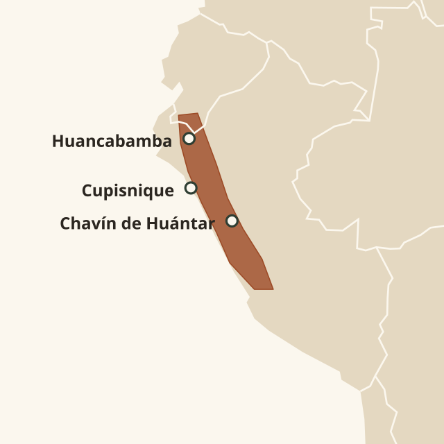

Cactus · Cactáceas · Andes de Ecuador y Perú
San Pedro
Echinopsis pachanoi (Britton & Rose) H.Friedrich & G.D.Rowley
Un cactus columnar de tres a seis metros que crece en la ladera andina. Se le llama wachuma o San Pedro, y sus imágenes más antiguas, en la cerámica de la costa norte del Perú, tienen hasta 3.500 años.3
También se llamawachuma · huachuma · achuma · aguacolla · gigantón · cactus de San Pedro

- Qué es
- Cactus columnar y ramificado, de crecimiento rápido
- Territorio
- Andes del sur de Ecuador y de Perú
- Parte usada
- El tallo, hervido o en infusión
- Principios activos
- Mescalina y otros alcaloides
- Empieza y dura
- 45–90 min · 8–12 h, a veces más
- Quién guarda su memoria
- Curanderos y comunidades andinas del norte del Perú
Botánica
Una columna verde que sube la ladera
Es un cactus columnar y ramificado que suele medir entre tres y seis metros. Los tallos, verdes y a veces azulados, tienen entre seis y ocho costillas, y en los ejemplares cultivados las espinas son cortas o casi no existen.2
Sus flores son blancas, perfumadas y enormes, de unos veinte centímetros. Se abren de noche y duran unos dos días. Después sale un fruto alargado, verde oscuro, que se abre y deja ver una pulpa blanca con semillas pequeñas.2
Crece en el monte seco andino, hacia los 2.000–3.000 metros, y puede ganar hasta treinta centímetros al año. Se reproduce con facilidad por esqueje.12
- Familia
- Cactaceae
- Porte
- Columnar, de 3 a 6 m
- Flor
- Blanca, nocturna y perfumada
- Fruto
- Alargado, de pulpa blanca
Memoria y tradición
Un cactus que atraviesa tres mil años
Las imágenes más antiguas del San Pedro están en la cerámica de la cultura cupisnique, en la costa norte del Perú, entre 1500 y 500 a. C.: el cactus aparece solo o junto a felinos y volutas escalonadas.3 En la costa central se han hallado además restos del propio cactus en yacimientos arqueológicos.4
En Chavín de Huántar, en la sierra de Áncash, una estela de la plaza circular muestra a un personaje que porta un cactus columnar.6 Los análisis de tubos de hueso de ese centro ceremonial, activo hacia 1200–400 a. C., detectaron restos de vilca y de tabaco silvestre (Nicotiana).5
Hoy la tradición sigue viva en el norte del Perú. En la región de Huancabamba, un estudio de campo de 1981 describe sesiones nocturnas de curación en las que el curandero y los pacientes beben el cactus, y el curandero busca el origen del mal.7
En el tiempo
Cerámica cupisnique de la costa norte del Perú con el cactus representado, las imágenes más antiguas que se conocen.3
Chavín de Huántar, en la sierra de Áncash, se mantiene como centro ceremonial; en sus tubos de hueso aparecen vilca y Nicotiana.5
Britton y Rose lo describen como Trichocereus pachanoi.2
Aparece en Chavín de Huántar la estela del portador del cactus.6
Friedrich y Rowley lo pasan al género Echinopsis.1
Albesiano y Kiesling lo tratan como variedad de Trichocereus macrogonus; Kew mantiene Echinopsis pachanoi como nombre aceptado.1
Sus nombres
- wachuma
- nombre andino; también huachuma y achuma
- aguacolla
- nombre andino
- gigantón
- castellano
- San Pedro
- castellano; se ha relacionado con las llaves del cielo que guarda el santo
El nombre cristiano se ha relacionado con la idea de alcanzar el cielo sin salir de la tierra, según el botánico Edward Anderson.2
Territorio y cuidado
Un cactus de ladera, fácil de cultivar

Kew sitúa su área nativa del sur de Ecuador al Perú, en una zona de vegetación tropical estacionalmente seca. Fuera de allí se ha introducido en Bolivia, Colombia, Chile central, Canarias y España.1
Se cultiva con facilidad y es común como planta ornamental, de modo que no depende de la recolección en el monte.2
Qué ayuda
- Respetar su uso entre curanderos y comunidades andinas, que lo guardan desde hace milenios.
- Preferir plantas cultivadas a las recolectadas en el monte.
- Conocer el contexto de la tradición antes de hablar de ella: es medicina viva de unos pueblos concretos.
Qué contiene
Mescalina, y un cactus que la reparte de forma irregular
Contiene mescalina, la misma fenetilamina del peyote, que activa el receptor de serotonina 5-HT2A.89 Tiene además otros alcaloides en cantidades menores.2
La cantidad de mescalina varía mucho de una planta a otra y también dentro de una misma planta, y por eso los ensayos clínicos usan mescalina pura, de dosis conocida.212
 MescalinaFenetilamina · alcaloide principal
MescalinaFenetilamina · alcaloide principalActiva el receptor de serotonina 5-HT2A. En un ensayo de 2024, un fármaco que bloquea ese receptor anuló casi todos sus efectos.
La experiencia
Un día entero
Empieza a notarse entre los 45 y los 90 minutos y se prolonga entre ocho y doce horas, a veces más. En los ensayos con mescalina se describe como una experiencia parecida a la del LSD o la psilocibina, con colores muy intensos, patrones y emociones fuertes. La diferencia principal es la duración.8
Con el cactus son frecuentes las náuseas y el vómito, sobre todo al subir. En muchas tradiciones esa purga forma parte del camino.12
Esquema orientativo: cambia con la preparación, la cantidad y la persona.
Investigación
Qué se ha estudiado
En 2023, un ensayo en Basilea comparó en personas sanas mescalina, LSD y psilocibina: 500 mg de mescalina produjeron una experiencia muy parecida a la de 100 µg de LSD y a la de 20 mg de psilocibina.8 En 2024, otro mostró que sus efectos aumentan con la dosis y que dependen del receptor 5-HT2A.9
Alcance de estos datosEsos ensayos se hicieron con mescalina pura, en personas sanas y con supervisión médica. No evaluaron un tratamiento ni el San Pedro ni la ceremonia andina, y no existe ningún medicamento con mescalina.
Con cuidado
Lo que conviene saber antes
Una experiencia muy larga y, a veces, difícil; en personas predispuestas, episodios de psicosis o de manía.10
El litio es la combinación más peligrosa: se han descrito convulsiones y psicosis.11
Es medicina de curanderos y comunidades andinas. Conviene conocer ese contexto y tratarlo con respeto.7
Para seguir
Libros y medicinas emparentadas
 Cactus of MysteryRoss Heaven · 2012En la biblioteca de APDER →
Cactus of MysteryRoss Heaven · 2012En la biblioteca de APDER → MescalineMike Jay · 2019En la biblioteca de APDER →
MescalineMike Jay · 2019En la biblioteca de APDER →El cactus del desierto chihuahuense, con la misma mescalina.
MoléculaMescalina3,4,5-trimetoxifenetilaminaEl principio activo de los cactus mescalínicos.
Un cactus columnar parecido al San Pedro.
El género Nicotiana aparece en los tubos de hueso de Chavín, junto a la vilca.
Fuentes
De dónde sale cada dato
- Royal Botanic Gardens, Kew. Plants of the World Online: Echinopsis pachanoi (Britton & Rose) H.Friedrich & G.D.Rowley. powo.science.kew.org.
- Wikipedia. «Trichocereus macrogonus var. pachanoi». en.wikipedia.org (consultada el 24-11-2026). Reúne datos de Anderson EF, The Cactus Family, 2001, y Rätsch C, 2002.
- Sharon D. Sacred Sanpedro in Ethnoarchaeological Context (resumen). Catálogo de documentos electrónicos de la British Library, eld.bl.uk.
- Capítulo sobre evidencia arqueológica del uso de plantas psicoactivas (cita a Fung 1972 y Polia Meconi 1996). Taylor & Francis, taylorfrancis.com.
- Rick JW, Lema VS, Echeverría J, Alva Valverde G, Contreras DA, Arias Espinoza O, Rosenfeld SA, Sayre MP. Pre-Hispanic ritual use of psychoactive plants at Chavín de Huántar, Peru. Proc Natl Acad Sci USA. 2025;122(19). doi:10.1073/pnas.2425125122.
- Wikipedia. «Stela of the cactus bearer». Estela VI-NW12, plaza circular de Chavín de Huántar, hallada en 1972 por Luis Guillermo Lumbreras. en.wikipedia.org (consultada el 24-11-2026).
- Observaciones etnobotánicas en la región de Huancabamba (Perú), trabajo de campo de 1981. MAPS Bibliography, bibliography.maps.org, recurso 13373.
- Ley L, Holze F, Arikci D, et al. Comparative acute effects of mescaline, lysergic acid diethylamide, and psilocybin in a randomized, double-blind, placebo-controlled cross-over study in healthy participants. Neuropsychopharmacology. 2023;48(11):1659-1667.
- Klaiber A, Schmid Y, Becker AM, et al. Acute dose-dependent effects of mescaline in a double-blind placebo-controlled study in healthy subjects. Transl Psychiatry. 2024;14:395.
- Johnson MW, Richards WA, Griffiths RR. Human hallucinogen research: guidelines for safety. J Psychopharmacol. 2008;22(6):603-620.
- Nayak SM, Gukasyan N, Barrett FS, Erowid E, Erowid F, Griffiths RR. Classic psychedelic coadministration with lithium, but not lamotrigine, is associated with seizures: an analysis of online psychedelic experience reports. Pharmacopsychiatry. 2021;54(5):240-245.
- Cassels BK, Sáez-Briones P. Dark classics in chemical neuroscience: mescaline. ACS Chem Neurosci. 2018;9(10):2448-2458.
- San Pedro (Echinopsis pachanoi) con sus costillas y areolas. Forest & Kim Starr · CC BY 3.0
- Mapa APDER, con datos de Natural Earth · dominio público
- Dibujos de moléculas APDER
Última revisión: 24 de noviembre de 2026. Si ves un error, escríbenos a info@apder.org.